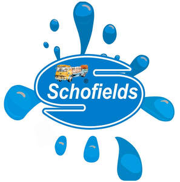

Trade Mark Journal No.2025/040 3 October 2025
UK00004267093 20 September 2025 (32)

- Class 32
- Soft drinks; Carbonated soft drinks; Non-carbonated soft drinks; Fruit-flavored soft drinks; Low-calorie soft drinks; Coffee-flavored soft drinks; Colas [soft drinks]; Soft drinks flavored with tea; Fruit flavored soft drinks; Syrups for making soft drinks; Powders for making soft drinks; Fruit-based soft drinks flavored with tea; Syrups used in the preparation of soft drinks; Low calorie soft drinks; Powders used in the preparation of soft drinks; Concentrates for use in the preparation of soft drinks; Concentrates used in the preparation of soft drinks; Non-alcoholic drinks; Cola drinks; Isotonic non-alcoholic drinks; Non-alcoholic fruit drinks; Juice drinks; Fruit flavoured carbonated drinks; Isotonic drinks; Non-alcoholic malt drinks; Slush drinks; Fruit drinks; Non-alcoholic carbonated beverages; Frozen fruit-based drinks; Fruit flavoured drinks; Fruit flavored drinks; Non-alcoholic beverages flavoured with coffee; Non-alcoholic vegetable juice drinks; Non-alcoholic flavored carbonated beverages; Frozen carbonated beverages; Frozen fruit drinks; Flavoured carbonated beverages; Carbohydrate drinks; Guarana drinks; Non-alcoholic beverages flavored with coffee; Syrups for making fruit-flavored drinks; Non-alcoholic beverages flavoured with tea; Fruit-flavoured beverages; Cordials (non-alcoholic beverages); Energy drinks; Non-alcoholic beverages flavored with tea; Sherbets [beverages]; Non-alcoholic beverages; Sports drinks; Non-alcoholic beer flavored beverages; Fruit juice drinks; Orange juice drinks; Fruit juice beverages (Non-alcoholic -); Squashes [non-alcoholic beverages]; Apple juice drinks; Non-alcoholic syrups for making beverages; Non-alcoholic dried fruit beverages; Non-alcoholic beverages with tea flavor; Syrups for making non-alcoholic beverages; Aloe vera drinks, non-alcoholic; Non-alcoholic honey-based beverages; Honey-based beverages (Non-alcoholic -); Extracts for making non-alcoholic beverages; Concentrates for making fruit drinks; Fruit-based beverages.
anthony Morrison